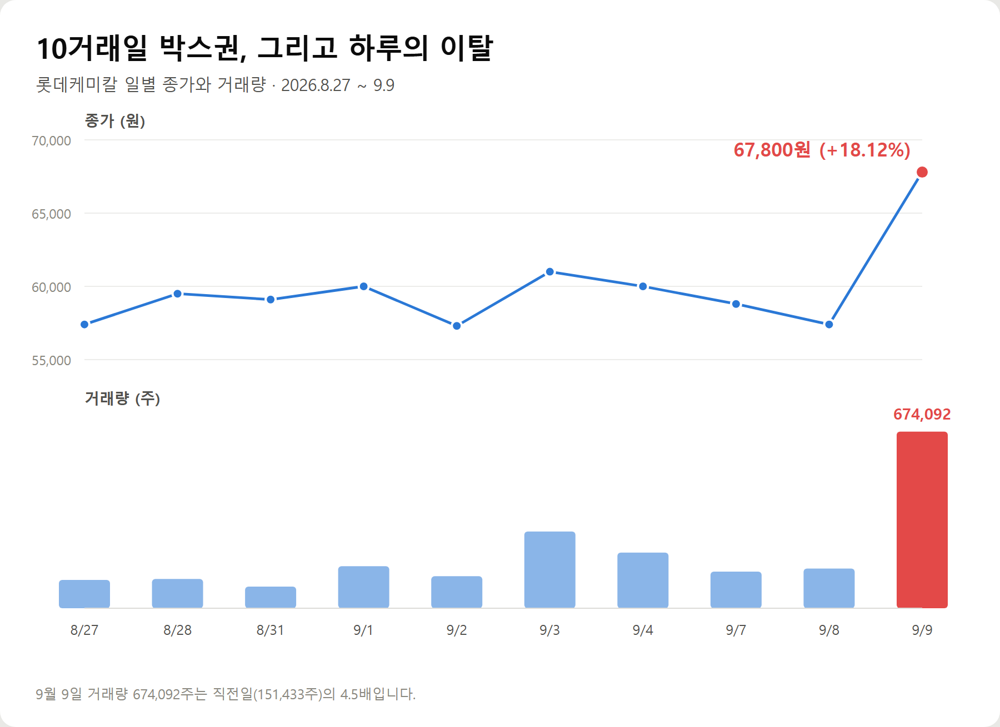
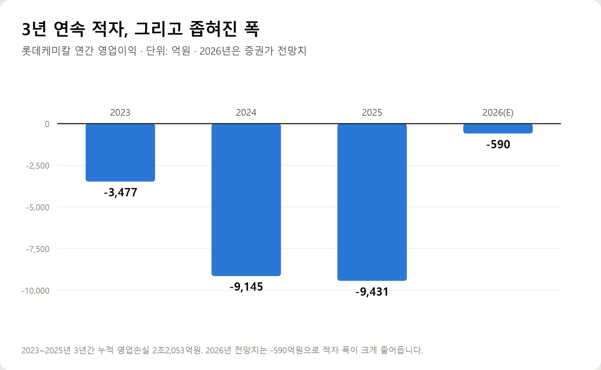
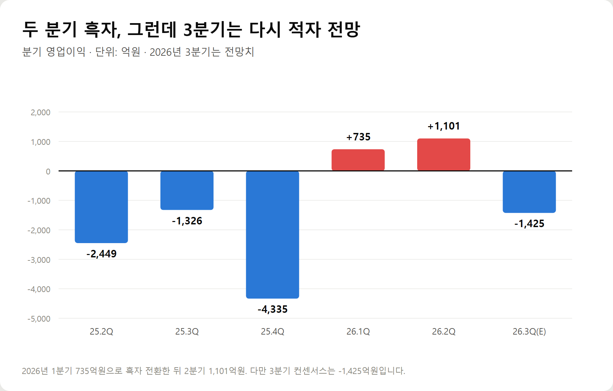
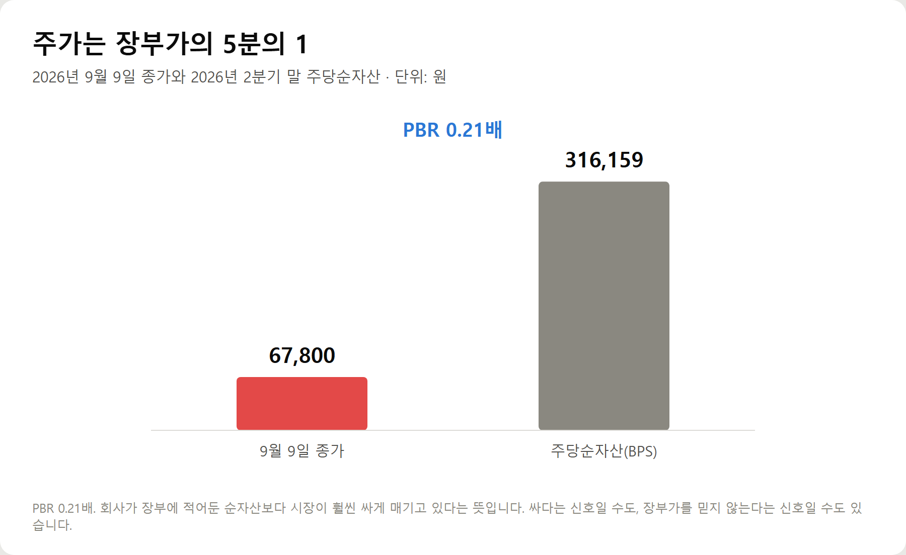

<meta charset="utf-8">
<title>롯데케미칼 +18.12% — 3년 적자 끝에 온 신호일까 — 나의 투자 그리고 행복한 여행</title>
<meta name="description" content="롯데케미칼이 2026년 9월 9일 18.12% 급등해 67,800원에 마감했습니다. 정부 승인 사업재편과 국제유가, 3년 연속 적자와 두 분기 흑자 전환, PBR 0.21배를 재무제표로 분석했습니다.">
<meta name="viewport" content="width=device-width, initial-scale=1">
<link rel="canonical" href="https://danielmoon82.github.io/moon/posts/lotte-chemical-2026-09-09.html">
<link rel="preconnect" href="https://fonts.googleapis.com">
<link rel="preconnect" href="https://fonts.gstatic.com" crossorigin>
<link rel="stylesheet" href="https://fonts.googleapis.com/css2?family=Hahmlet:wght@400;600;800&family=IBM+Plex+Mono:wght@400;500&family=IBM+Plex+Sans+KR:wght@300;400;500;600&display=swap">

<style>
  :root{
    --paper:#F2EEE6;--surface:#FAF8F3;--surface-2:#E7E1D5;
    --ink:#191510;--ink-2:#4A4235;--ink-3:#7D7364;
    --line:#D6CEBF;--line-soft:#E4DDD0;--accent:#B06A15;--accent-bright:#C2761A;
    --up:#E5484D;--down:#3B82F6;
    --f-display:"Hahmlet",'Nanum Myeongjo',"Apple SD Gothic Neo",serif;
    --f-body:"IBM Plex Sans KR","Apple SD Gothic Neo","Malgun Gothic",sans-serif;
    --f-mono:"IBM Plex Mono","SFMono-Regular",Consolas,monospace;
    --pad:clamp(20px,5vw,64px);
  }
  @media (prefers-color-scheme:dark){
    :root:not([data-theme="light"]){
      --paper:#0B1120;--surface:#121A2C;--surface-2:#1A2439;
      --ink:#E9EEF7;--ink-2:#A9B5C9;--ink-3:#72809A;
      --line:#26314A;--line-soft:#1D2739;--accent:#E8A33D;--accent-bright:#F0B45C;
    }
  }
  *{box-sizing:border-box;}
  body{margin:0;background:var(--paper);color:var(--ink);font-family:var(--f-body);
    font-weight:300;font-size:1rem;line-height:1.75;-webkit-font-smoothing:antialiased;}
  a{color:inherit;}
  img{max-width:100%;height:auto;}
  .wrap{max-width:760px;margin:0 auto;padding-inline:var(--pad);}
  .nav{position:sticky;top:0;z-index:20;background:color-mix(in srgb,var(--paper) 88%,transparent);
    backdrop-filter:saturate(180%) blur(12px);border-bottom:1px solid var(--line);}
  .nav-in{display:flex;align-items:center;justify-content:space-between;height:58px;}
  .brand{font-family:var(--f-display);font-weight:600;font-size:1rem;letter-spacing:-.02em;text-decoration:none;}
  .back{font-family:var(--f-mono);font-size:.72rem;color:var(--ink-3);text-decoration:none;}
  .article{padding-block:clamp(40px,7vw,72px) clamp(56px,9vw,96px);}
  .eyebrow{font-family:var(--f-mono);font-size:.68rem;letter-spacing:.16em;text-transform:uppercase;
    color:var(--accent);margin:0 0 14px;}
  h1{font-family:var(--f-display);font-weight:800;font-size:clamp(1.6rem,4.4vw,2.3rem);
    line-height:1.3;letter-spacing:-.03em;margin:0 0 16px;}
  .byline{font-family:var(--f-mono);font-size:.72rem;color:var(--ink-3);
    padding-bottom:24px;border-bottom:1px solid var(--line);margin-bottom:32px;}
  h2{font-family:var(--f-display);font-weight:600;font-size:1.25rem;letter-spacing:-.02em;margin:42px 0 14px;}
  h3{font-family:var(--f-display);font-weight:600;font-size:1.05rem;letter-spacing:-.02em;
    margin:30px 0 10px;padding-top:14px;border-top:1px solid var(--line-soft);}
  h3 .code{font-family:var(--f-mono);font-size:.7rem;font-weight:400;color:var(--ink-3);margin-left:6px;}
  p{margin:0 0 18px;color:var(--ink-2);}
  ul.checks{margin:0 0 18px;padding-left:20px;color:var(--ink-2);}
  ul.checks li{margin-bottom:8px;font-size:.94rem;}
  table{width:100%;border-collapse:collapse;font-size:.88rem;margin-bottom:8px;}
  th{font-family:var(--f-mono);font-size:.66rem;letter-spacing:.06em;text-transform:uppercase;
    color:var(--ink-3);text-align:right;padding:8px 6px;border-bottom:1px solid var(--line);}
  th:first-child{text-align:left;}
  td{padding:10px 6px;border-bottom:1px solid var(--line-soft);color:var(--ink-2);}
  td.num{font-family:var(--f-mono);text-align:right;font-variant-numeric:tabular-nums;}
  td.up{color:var(--up);} td.down{color:var(--down);}
  .scroll{overflow-x:auto;}
  figure{margin:22px 0;}
  figure img{display:block;border-radius:3px;background:var(--surface-2);}
  figcaption{margin-top:8px;font-family:var(--f-mono);font-size:.68rem;color:var(--ink-3);text-align:center;}
  .note{margin-top:34px;padding:16px 18px;border-left:3px solid var(--accent);
    background:var(--surface);border-radius:0 3px 3px 0;}
  .note p{margin:0;font-size:.85rem;color:var(--ink-3);}
  .foot{border-top:1px solid var(--line);background:var(--surface);padding-block:30px 38px;}
  .foot p{margin:0;font-size:.8rem;color:var(--ink-3);}
</style>

<nav class="nav">
  <div class="wrap nav-in">
    <a class="brand" href="../index.html">나의 투자 그리고 행복한 여행</a>
    <a class="back" href="../index.html#stocks">← 시황으로</a>
  </div>
</nav>

<main class="wrap article">
  <p class="eyebrow">Market</p>
  <h1>롯데케미칼 2026-09-09 +18.12% — 사업재편과 유가가 겹친 하루</h1>
  <p class="byline">투자 · 2026-09-09 기준</p>

  <p>한 줄 요약: 정부 승인 사업재편으로 NCC 110만톤이 3년간 멈추고, 브렌트유가 100달러에 근접하면서 롯데케미칼이 하루 18.12% 올랐습니다.</p>
  <p>종가 67,800원, 거래량 674,092주로 직전일의 4.5배. 시가총액 2조9,002억원, PBR 0.21배입니다.</p>
  <p>이 글은 2026년 9월 9일 장 마감 기준으로 확인 가능한 재무·시세 데이터와 같은 날 보도만으로 정리한 기록입니다.</p>
  <h2>1. 오늘 무슨 일이 있었나</h2>
  <p>2026년 9월 9일, 롯데케미칼(011170)은 전 거래일보다 10,400원(18.12%) 오른 67,800원에 마감했습니다.</p>
  <p>장중 고가는 68,500원이었습니다. 시가는 57,700원으로 출발했으니, 장이 열린 뒤에 매수세가 붙었다는 뜻입니다.</p>
  <p>주목할 것은 거래량입니다. 674,092주로 직전 거래일(151,433주)의 4.5배였습니다.</p>
  <figure><figcaption>롯데케미칼 일별 종가와 거래량 (2026.8.27~9.9)</figcaption></figure>
  <p>직전 10거래일 동안 이 종목은 57,300원에서 61,000원 사이에 갇혀 있었습니다. 오늘 하루가 그 박스권을 한 번에 벗어난 것입니다.</p>
  <p>같은 날 석유화학 업종 전체가 움직였습니다. 대한유화는 13.59%, 롯데에너지머티리얼즈는 14.11% 올랐습니다. 개별 종목의 이슈가 아니라 업종 전체에 걸린 재료였다는 뜻입니다.</p>
  <p>코스피는 이날 오후 한때 7,049.09까지 올라 7,000선 안착을 시도했습니다.</p>
  <h2>2. 왜 올랐나 — 첫 번째 축: 정부가 승인한 설비 감축</h2>
  <p>첫 번째 재료는 국내 석유화학 산업의 구조조정입니다.</p>
  <p>HD현대케미칼은 이달 롯데대산석화를 흡수합병한 뒤 사명을 'H&amp;L어드밴스드'로 바꾸고 통합법인을 공식 출범시켰습니다. 이 회사의 지분은 롯데케미칼과 HD현대오일뱅크가 각각 50%씩 보유합니다.</p>
  <p>핵심은 그다음입니다.</p>
  <div class="note"><p>H&amp;L어드밴스드는 정부가 승인한 사업재편 계획에 따라 향후 3년간 롯데케미칼 대산 나프타분해시설(NCC) 110만톤의 가동을 중단하고, 수익성이 낮은 범용 설비 가동을 줄일 계획입니다.</p></div>
  <p>석유화학에서 가장 오래된 문제는 공급과잉이었습니다. 중국이 대규모 설비를 계속 늘리는 동안 국내 업체들은 팔수록 손해를 보는 범용 제품을 계속 찍어냈습니다.</p>
  <p>설비를 멈춘다는 것은 그 구조를 끊겠다는 뜻입니다. 그리고 이번에는 개별 기업의 판단이 아니라 정부 승인이 붙은 계획입니다.</p>
  <p>해외 쪽도 정리 중입니다. 롯데케미칼은 인도네시아 석유화학단지 운영법인 롯데케미칼인도네시아(LCI) 지분 일부를 현지 국부펀드 BPI 다난타라에 매각하는 방안을 검토해 왔습니다.</p>
  <h2>3. 왜 올랐나 — 두 번째 축: 호르무즈와 유가</h2>
  <p>두 번째 재료는 중동입니다.</p>
  <p>9월 9일 브렌트유는 배럴당 100달러에 근접했습니다. 서부텍사스산원유(WTI)는 93달러를 돌파했습니다.</p>
  <p>미국과 이란의 호르무즈 해협 대치가 길어지고 있습니다. 이란은 해협 외곽에 새 통제구역을 설정하겠다고 밝혔고, 미국의 보호 아래 자국이 지정한 위험구역을 통과하는 선박도 공격 대상으로 삼겠다고 맞서고 있습니다.</p>
  <p>뉴욕타임스에 따르면 7~8월 두 달 동안 호르무즈에서 최소 23척의 유조선이 피습됐습니다. 최근 원유 통과량은 하루 670만 배럴로, 충돌 이전보다 60% 줄어든 수준입니다.</p>
  <p>유가가 오르면 정유사는 재고평가이익이 늘고 정제마진이 개선됩니다. 석유화학도 제품 가격이 함께 오르면서 스프레드가 벌어집니다.</p>
  <p>실제로 'KRX 에너지화학' 지수는 8월 27일부터 9월 4일까지 1주일간 5.25% 올라 거래소가 산출하는 40개 산업지수 중 1위를 기록했습니다. 같은 기간 코스피는 -1.78%, 코스닥은 -1.62%였습니다.</p>
  <h2>4. 재무제표를 열어보면 — 3년간의 적자</h2>
  <p>여기서부터가 중요합니다. 재료가 좋아도 회사가 버틸 수 있어야 합니다.</p>
  <p>롯데케미칼의 최근 3년 연간 영업이익은 이렇습니다.</p>
  <figure><figcaption>롯데케미칼 연간 영업이익 (단위: 억원, 2026년은 전망치)</figcaption></figure>
  <ul class="checks">
    <li>2023년 매출 199,464억원 · 영업이익 -3,477억원</li>
    <li>2024년 매출 198,948억원 · 영업이익 -9,145억원</li>
    <li>2025년 매출 184,830억원 · 영업이익 -9,431억원</li>
    <li>2026년 매출 208,712억원(E) · 영업이익 -590억원(E)</li>
  </ul>
  <p>3년 누적 영업손실이 2조2,053억원입니다. 당기순손실은 더 큽니다. 2024년 -18,256억원, 2025년 -24,762억원이었습니다.</p>
  <p>순손실이 영업손실보다 훨씬 큰 것은 자산 손상차손 같은 영업 외 손실이 반영됐기 때문으로 보입니다. 특히 2025년 4분기 한 분기에만 순손실 15,950억원이 잡혔습니다.</p>
  <p>주주 입장에서 체감되는 숫자는 ROE입니다. 2024년 -11.44%, 2025년 -15.13%였습니다. 자본을 까먹었다는 뜻입니다.</p>
  <h2>5. 그런데 최근 두 분기는 흑자였다</h2>
  <p>연간 숫자만 보면 절망적이지만, 분기로 쪼개면 다른 그림이 나옵니다.</p>
  <figure><figcaption>롯데케미칼 분기 영업이익 (단위: 억원, 2026년 3분기는 전망치)</figcaption></figure>
  <ul class="checks">
    <li>2025년 2분기 -2,449억원</li>
    <li>2025년 3분기 -1,326억원</li>
    <li>2025년 4분기 -4,335억원</li>
    <li>2026년 1분기 +735억원 — 흑자 전환</li>
    <li>2026년 2분기 +1,101억원 — 2개 분기 연속 흑자</li>
    <li>2026년 3분기 -1,425억원(전망치)</li>
  </ul>
  <p>2026년 1분기에 흑자로 돌아섰고 2분기에는 매출 56,864억원으로 최근 구간 최대치를 기록하며 영업이익 1,101억원을 냈습니다.</p>
  <p>문제는 마지막 줄입니다. 증권가가 보는 2026년 3분기 컨센서스는 다시 적자입니다.</p>
  <div class="note"><p>즉 시장은 아직 이 회사의 흑자를 '추세'가 아니라 '두 분기의 일'로 보고 있습니다. 오늘의 급등은 그 시각이 바뀔 수 있다는 기대에 베팅한 것입니다.</p></div>
  <h2>6. 밸류에이션 — 장부가의 5분의 1</h2>
  <p>적자 기업은 PER로 볼 수 없습니다. 이익이 마이너스면 PER도 마이너스가 되어 의미가 없어집니다.</p>
  <p>그래서 이런 회사는 자산으로 봅니다.</p>
  <figure><figcaption>9월 9일 종가와 주당순자산(BPS) 비교</figcaption></figure>
  <p>2026년 2분기 말 기준 주당순자산(BPS)은 316,159원입니다. 9월 9일 종가는 67,800원입니다. PBR로 환산하면 약 0.21배입니다.</p>
  <p>회사가 장부에 적어둔 순자산의 5분의 1 가격에 거래되고 있다는 뜻입니다.</p>
  <p>이 숫자는 두 가지로 읽힙니다.</p>
  <ul class="checks">
    <li>싸다는 신호 — 업황이 돌아서면 정상화 여지가 크다</li>
    <li>장부를 믿지 않는다는 신호 — 시장은 저 자산이 그만큼의 현금을 만들지 못한다고 본다</li>
  </ul>
  <p>지난 3년간 시장은 후자 쪽이었습니다. 순손실이 쌓이면서 BPS 자체도 2023년 368,608원에서 2026년 2분기 316,159원까지 줄었습니다. 장부가가 실제로 깎여 나간 것입니다.</p>
  <h2>7. 재무 건전성 — 버틸 수 있는가</h2>
  <p>구조조정에는 시간이 걸립니다. 그 시간을 버틸 체력이 있는지 봐야 합니다.</p>
  <p>부채비율은 2023년 65.46%에서 2026년 2분기 76.76%로 올랐습니다. 절대 수준으로는 아직 위험한 구간이 아닙니다. 제조업에서 100% 아래면 무난하다고 봅니다.</p>
  <p>다만 짚어야 할 지표가 하나 있습니다.</p>
  <div class="note"><p>당좌비율이 2023년 105.68%에서 2026년 2분기 35.27%까지 떨어졌습니다. 1년 안에 갚아야 할 돈 대비 바로 현금화할 수 있는 자산이 3분의 1 수준이라는 뜻입니다.</p></div>
  <p>2025년 말 65.97%에서 반년 만에 35.27%로 내려앉았습니다. 설비 투자와 계열 지원, 그리고 누적된 적자가 현금을 소모한 결과로 보입니다.</p>
  <p>부채비율이 괜찮다고 안심할 게 아니라, 단기 유동성 쪽을 계속 지켜봐야 하는 상황입니다.</p>
  <h2>8. 유가는 양날의 검이다</h2>
  <p>여기가 이 글에서 가장 조심해야 할 대목입니다.</p>
  <p>오늘 주가를 올린 유가는, 이 회사에게 좋기만 한 재료가 아닙니다.</p>
  <p>석유화학의 원료는 나프타입니다. 나프타는 원유에서 나옵니다. 유가가 오르면 원료비가 함께 오릅니다.</p>
  <p>유가 상승이 실적으로 이어지려면 제품 가격이 원료 가격보다 더 많이, 더 빨리 올라야 합니다. 이 차이를 스프레드라고 부릅니다.</p>
  <ul class="checks">
    <li>제품 가격이 더 오르면 → 스프레드 확대 → 실적 개선</li>
    <li>원료 가격만 오르고 제품 가격이 못 따라가면 → 스프레드 축소 → 오히려 손실 확대</li>
  </ul>
  <p>정유사는 재고평가이익이라는 완충재가 있어 유가 상승이 비교적 직접적인 호재입니다. 순수 석유화학사는 다릅니다.</p>
  <p>오늘 시장이 베팅한 것은 '유가가 올랐다'가 아니라 '공급이 줄어 제품 가격이 원료보다 더 오를 것이다'입니다. 이 가정이 맞는지가 앞으로의 관전 포인트입니다.</p>
  <h2>9. 앞으로의 시나리오</h2>
  <p>지금 확인된 사실만으로 세 갈래를 그려볼 수 있습니다.</p>
  <p>첫째, 구조조정이 실제로 스프레드를 벌리는 경우입니다.</p>
  <p>NCC 110만톤이 3년간 멈추고 중국의 증설 속도도 둔화되면, 공급과잉이 완화되면서 제품 가격이 지지됩니다. 이 경우 2026년 3분기 적자 전망이 상향 조정될 수 있고, PBR 0.21배는 정상화 여지로 읽힙니다.</p>
  <p>둘째, 유가만 오르고 제품 가격이 못 따라가는 경우입니다.</p>
  <p>중동 리스크가 원료비만 밀어 올리고 수요가 받쳐주지 않으면 스프레드는 오히려 좁아집니다. 이때는 오늘의 급등이 되돌려집니다.</p>
  <p>셋째, 중동 상황이 풀리는 경우입니다.</p>
  <p>호르무즈 긴장이 완화되면 유가가 내려가면서 오늘 상승분의 절반은 명분을 잃습니다. 다만 사업재편이라는 축은 남습니다.</p>
  <p>세 시나리오 모두 열려 있습니다. 하나로 단정할 수 있는 국면이 아닙니다.</p>
  <h2>10. 지금 사도 될까</h2>
  <p>제 판단을 정리하면 이렇습니다.</p>
  <p>오늘 하루 18% 오른 자리에서 추격매수는 매력도가 높지 않습니다. 이유는 세 가지입니다.</p>
  <p>첫째, 증권가 컨센서스가 아직 3분기 적자입니다. 실적으로 확인된 것이 아니라 기대가 먼저 간 상태입니다.</p>
  <p>둘째, 유가는 이 회사에게 원가이기도 합니다. 스프레드가 실제로 벌어졌는지는 3분기 실적이 나와야 알 수 있습니다.</p>
  <p>셋째, 당좌비율 35.27%는 여유 있는 숫자가 아닙니다.</p>
  <p>반대로 이 종목을 계속 볼 이유도 분명합니다. PBR 0.21배라는 가격, 정부 승인이 붙은 설비 감축, 그리고 두 분기 연속 흑자라는 실제 기록입니다.</p>
  <div class="note"><p>지금은 '사야 하는 자리'라기보다 '3분기 실적을 확인해야 하는 자리'에 가깝습니다.</p></div>
  <h2>11. 앞으로 확인할 세 가지</h2>
  <p>첫째, 3분기 실적이 컨센서스(-1,425억원)를 넘어서는가. 이것이 가장 중요합니다. 두 분기 흑자가 우연이 아니었음을 증명하는 자리입니다.</p>
  <p>둘째, 나프타와 제품 가격의 스프레드가 실제로 벌어지는가. 유가만 오르고 스프레드가 좁아지면 재료는 무효가 됩니다.</p>
  <p>셋째, 당좌비율이 회복되는가. 35.27%에서 더 내려가면 구조조정을 완주할 체력이 문제가 됩니다.</p>
  <p>여기에 하나 덧붙이면, 인도네시아 LCI 지분 매각이 실제 계약으로 확정되는지도 봐야 합니다. 현금이 들어오면 유동성 부담이 줄어듭니다.</p>
  <h2>자주 묻는 질문</h2>
  <p>Q. 롯데케미칼이 오늘 왜 올랐나요?</p>
  <p>두 가지가 겹쳤습니다. 정부가 승인한 사업재편으로 대산 NCC 110만톤이 3년간 가동을 멈추게 됐고, 호르무즈 해협 충돌로 브렌트유가 배럴당 100달러에 근접했습니다. 공급이 줄고 제품 가격이 오를 것이라는 기대가 주가에 반영됐습니다.</p>
  <p>Q. 3년 적자인데 주가가 오르는 게 정상인가요?</p>
  <p>주가는 지나간 실적이 아니라 앞으로의 실적을 반영합니다. 2026년 1·2분기에 이미 흑자로 돌아섰고, 구조조정으로 적자 폭이 줄어들 것이라는 기대가 반영된 것입니다. 다만 3분기 컨센서스는 다시 적자입니다.</p>
  <p>Q. PBR 0.21배면 무조건 싼 건가요?</p>
  <p>아닙니다. 장부에 적힌 자산이 실제로 현금을 만들어내지 못하면 그 장부가는 의미가 줄어듭니다. 실제로 이 회사의 BPS는 2023년 368,608원에서 2026년 2분기 316,159원으로 줄었습니다. 싸 보이는 데는 이유가 있습니다.</p>
  <p>Q. 유가가 오르면 석유화학에 무조건 좋은가요?</p>
  <p>아닙니다. 나프타가 원료라 유가는 원가이기도 합니다. 제품 가격이 원료보다 더 많이 올라야(스프레드 확대) 실적이 좋아집니다. 유가만 오르면 오히려 손실이 커질 수 있습니다.</p>
  <p>Q. 재무 상태에서 가장 조심할 지표는 무엇인가요?</p>
  <p>당좌비율입니다. 2023년 105.68%에서 2026년 2분기 35.27%까지 떨어졌습니다. 부채비율(76.76%)은 아직 무난하지만 단기 유동성은 여유가 줄었습니다.</p>
  <h2>정리하면</h2>
  <p>롯데케미칼은 9월 9일 18.12% 올라 67,800원에 마감했습니다. 거래량은 직전일의 4.5배였고, 10거래일 박스권을 하루에 벗어났습니다.</p>
  <p>올린 힘은 두 개였습니다. 정부 승인이 붙은 NCC 110만톤 감축, 그리고 100달러에 근접한 브렌트유입니다.</p>
  <p>숫자를 열어보면 이 회사는 3년간 2조2,053억원의 영업손실을 냈고, 그 사이 주당순자산은 368,608원에서 316,159원으로 깎였습니다. 다만 2026년 들어 두 분기 연속 흑자를 냈습니다.</p>
  <p>그리고 증권가는 3분기에 다시 적자를 봅니다.</p>
  <p>결국 오늘의 급등은 '적자 기업이 흑자 기업으로 바뀌는 중'이라는 데 건 베팅입니다. 그 베팅이 맞았는지는 3분기 실적에서 드러납니다.</p>
  <p>PBR 0.21배라는 가격은 그 불확실성의 값이기도 합니다. 싸서 싼 게 아니라, 확인되지 않아서 싼 것입니다.</p>
  <div class="note"><p>이 글은 공개된 재무 데이터와 보도를 정리한 것으로 특정 종목의 매수·매도를 권유하지 않습니다. 투자 판단과 그에 따른 손실의 책임은 투자자 본인에게 있습니다.</p></div>
  <p>※ 주가·거래량·재무 수치는 2026년 9월 9일 장 마감 기준 네이버금융 공시 자료이며, 2026년 3분기 및 연간 수치는 증권사 컨센서스(전망치)입니다. 사업재편과 국제유가 관련 내용은 같은 날 보도를 근거로 작성했습니다.</p>
</main>

<footer class="foot">
  <div class="wrap"><p>나의 투자 그리고 행복한 여행 · 투자 판단의 참고 자료일 뿐, 매수·매도를 권유하지 않습니다.</p></div>
</footer>
